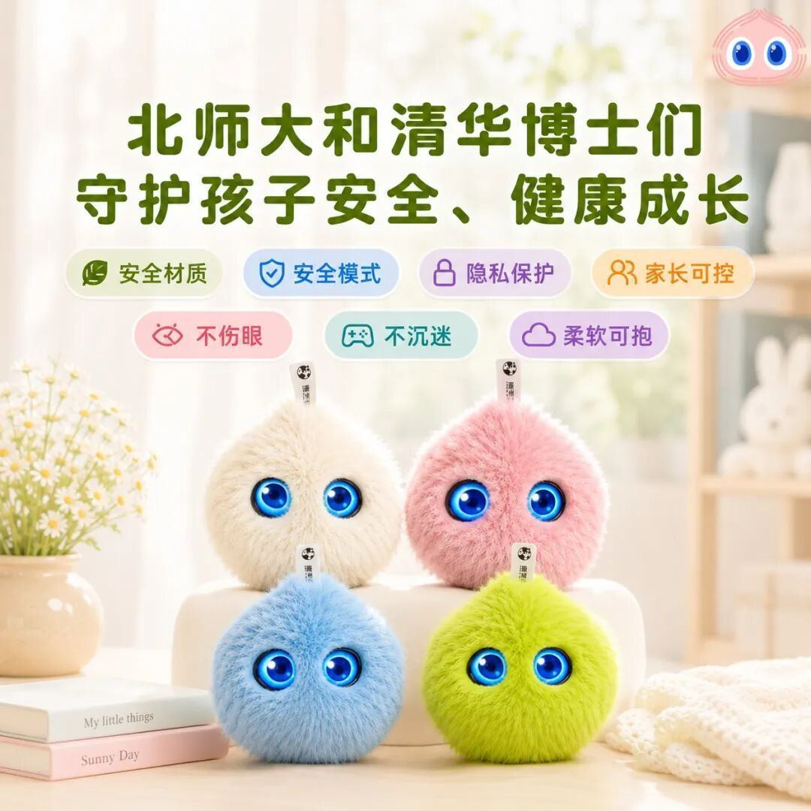

软萌毛绒外观搭配智能交互AI，能陪伴孩子聊天、安抚情绪，给小朋友温暖治愈的专属陪伴，欢迎大家来到现场亲手体验真机。

📅展会时间：2026.07.17-07.20
📍展馆地点：上海世博展览馆B1
🎯展位信息：W8-1至W8-3、W9-1至W9-3
软萌黑科技！超级球球AI儿童陪伴机器人核心优势
作为面向3-18岁儿童打造的轻量化智能陪伴硬件，超级球球跳出传统儿童平板、大型早教机的笨重设计，以毛绒球形外观+全链路AI交互打造差异化竞争力，五大核心优势直击市场痛点：
1. 高颜值毛绒外观，孩子随身专属玩伴整体水滴毛绒造型，柔软亲肤环保毛绒面料，搭配灵动可动电子大眼、氛围感腮红灯光，自带便携挂绳，可挂书包、随身揣兜，摆脱传统智能设备冰冷塑料质感，既是AI机器人也是儿童安抚玩偶，自带文创礼品属性。
2. 全场景智能语音交互，实时双向对话搭载自研儿童专属语音大模型，识别孩童模糊童音，支持故事点播、双语对话、问答科普、情绪安抚；无需屏幕，杜绝儿童蓝光伤眼问题，长时间陪伴也不伤视力。
3. 系统化AI早教体系，分龄启蒙不单调内置分龄早教资源库：低龄段童谣、睡前故事、习惯引导；学龄段古诗词、英语启蒙、科普百科，AI可根据孩子互动习惯自动推送适配内容，兼顾趣味与知识性，替代单一早教机。
4. 多重安全防护设计，家长更放心硬件安全：无尖锐边角、食品级环保毛绒，防啃咬、防磕碰；内容安全：内置青少年纯净内容库，过滤不良信息；远程监护：家长端小程序可查看使用时长、自定义内容权限，管控使用时间。
5. 轻量化易量产，多元落地适配全渠道体积小巧、成本可控，支持定制IP联名、企业礼品贴牌、渠道专属功能开发；适配母婴门店、儿童乐园教培机构、文创潮玩、母婴礼盒、线下商超、文旅周边等多赛道场景，兼具零售与批量采购双重市场空间。
WAIC2026，上海世博展览馆W8-1至W8-3、W9-1至W9-3，我们现场相见！
